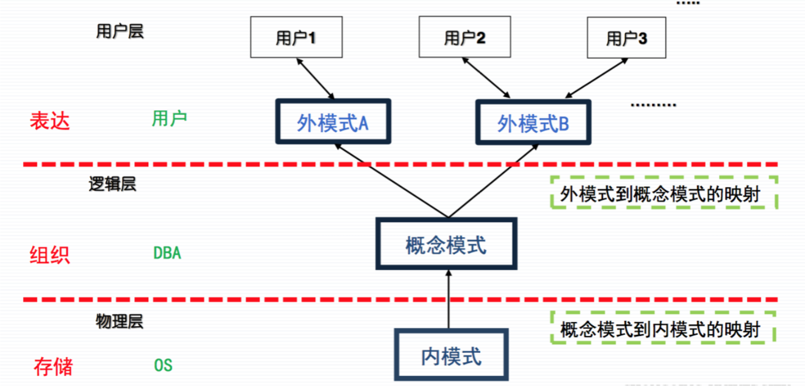

数据库原理笔记C01 数据库基础知识
1.2 基本概念
数据和信息
数据是数据库中存储的基本对象
- 定义: 描述事物的符号记录
- 种类: 数字、文字、图形、图像、音频、视频、学生的档案记录等
数据本身(李明, 男, 199712, 江苏南京市, 计算机系, 2016)并不能完全表达内容
需要经过语义解释(李明是个大学生，1997年12月出生，江苏南京市人，2016年考入计算机系)。
信息通常定义为经过加工处理后的数据。
信息以数据的形式表示，数据是信息的载体，信息则是数据加工的结果，是对数据的解释。
数据处理和数据管理
数据处理是指将数据转换成信息的过程。数据管理在数据处理的一系列活动中，对数据进行分类、组织、编码、存储、检索和维护等操作的统称。
数据库(DB)是长期储存在计算机内、有组织的、可共享的大量数据的集合。
基本特征:
- 数据按一定的数据模型组织、描述和储存
- 可为各种用户共享
- 冗余度较小
- 数据独立性较高
- 易扩展
数据库管理系统(DBMS)是位于用户与操作系统之间的一层数据管理软件， 是基础软件，是一个大型复杂的软件系统。
用途: 科学地组织和存储数据、高效地获取和维护数据
eg. SQL Server、Oracle、MySQL
数据库管理员(DBA)是指负责数据库的建立、使用和维护的专门人员。数据库用户是指与数据库系统打交道的人员，主要包括应用程序猿鹤最终用户。数据库系统(DBS)是指在计算机系统中引入数据库后的系统构成，一般由数据库、操作系统、数据库管理工具、应用开发工具、应用系统、数据库管理员和用户构成。(P3 图1.2)
1.3 数据管理的发展P10
人工管理阶段
- 数据不能长期保存
- 数据和程序不具有独立性
- 没有文件的概念
- 数据是面向应用程序的
文件管理系统
- 数据可以长期保存在存储设备上供用户使用
- 数据和程序之间具有一定的独立性
- 实时处理
- 数据独立性不足
- 数据冗余度大且容易产生数据不一致
- 数据整体没有结构
- 数据不是集中管理，安全性、完整性得不到可靠保证
数据库技术管理
采用一定的
数据模型实现数据结构化。数据的用数据模型描述，无需应用程序定义。应用程序与数据具有较高独立性(逻辑独立性、物理独立性)，由数据库管理系统的
二级映像来保证。支持数据共享。数据面向整个系统，可以被多个用户、多个应用共享使用。
- 减少数据冗余,节约存储空间
- 避免数据之间的不相容性与不一致性
- 使系统易于扩充
数据安全性较高
- DBMS设置了安全与授权子系统
- DBMS设置了数据完整性控制机制，保证数据的正确性、有效性和相容性。
- DBMS设置了数据库备份和恢复机制
- 并发控制，对多用户的并发操作加以控制和协调，防止相互干扰而得到错误的结果。
1.4 数据库的体系结构
数据库系统的三级模式结构
数据库系统由外模式、模式和内模式三级构成。
数据库系统的主要目的之一，为用户提供一个数据的抽象视图，隐藏数据的存储结构和存储方法等细节。
数据 → 文件(内模式) → 表(模式) → 导出表/视图(概念模式)
内模式(存储模式): 数据的物理结构和存储结构的描述，是数据在数据库内部的表示方式。
顺序存储、B树结构存储、Hash存储、索引，数据压缩加密。
概念模式(逻辑模式/模式/结构模式): 数据库中全体数据的逻辑结构和特征的描述。
记录数据项构成、数据项名字、类型、取值范围等。
安全性、完整性约束，定义联系。
外模式(用户模式): 用户看见和使用的局部数据的逻辑结构和特征的描述。
数据库系统的二层映像结构
外模式/模式映像: 保证了数据和程序之间的逻辑独立性。
模式/内模式映像: 保证了数据和程序之间的物理独立性。
数据库系统的应用框架
- 单用户(的数据库系统)
- 主从式/集中式
- 由一个主机连接多个终端用户的结构
- 多个用户可以同时并发地存储数据，能够共享数据。
- 分布式结构
- 分布结构的数据库中数据在逻辑上是一个整体, 物理上在网络的不同节点上。
- 当用户需要经常访问远程数据时，系统效率会明显地收到网络通信的制约。
- 客户机/服务器结构(C/S)
- 基于局域网的网络，需要安装专门的客户端软件。
- 降低了系统的通信开销。
- 浏览器/服务器结构(B/S)
- 基于网络和浏览器/Web服务器，需要考虑浏览器的兼容性。
- 客户端零维护，系统的扩展非常容易，但应用服务器端负荷较重。
1.5 数据库管理系统
主要功能
- 数据定义
- 数据操纵
- 数据库运行管理
- 数据组织、存储和管理
- 数据库的建立和维护
- 数据通信接口
组成
- 数据定义语言及其翻译处理程序
- 数据操纵语言及其翻译解释程序
- 数据运行控制程序
- 实用程序